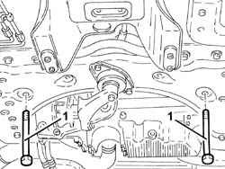
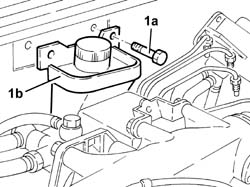
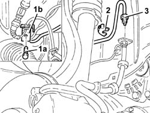
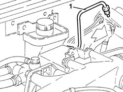

3340B56 RIGID PIPE from hydraulic CONTROL UNIT to RIGHT FRONT BRAKE - R.R.
- Path
- Procedures > 33 BRAKING SYSTEM > 3340 A(B.S. ANTI-LOCK BRAKING SYSTEM .) > 3340B abs system pipes > 3340B56 RIGID PIPE from hydraulic CONTROL UNIT to RIGHT FRONT BRAKE - R.R.
- Kind
- repair procedure (removal / refitting; the operation number is the code)
- Applies to
- all engines; all production periods
- Interactive page
- https://sloeber94.github.io/elrnDB-a156/en/#/3238103
Applies to: all engines; all production periods
 Removing
Removing
 Refitting
Refitting4450B10 Front WHEEL (one) - R.R.
7055B64 Engine compartment DUST shield in front wheel arch (one), left or right - R.R.
1076B50 exhaust pipe attachment to engine - r + r
1. Unscrew power steering box fixing springs to front suspension cross brace.

Applies to: all engines; all production periods
3340A12 A'B.S. system. - electronic and hydraulic CONTROL UNIT R.R.
5530B52 Battery DRIP TRAY/SUPPORT - R.R.
3340A13 abs central mount - r r
1. Unscrew screws (1a) and move brake-clutch fluid reservoir away (1b).

Applies to: all engines; all production periods
Disconnect air-condition system cooling fluid pipe fittings on engine compartment parcel tray.
Disconnect hose from hydraulic central unit to right front brake from clamps on engine compartment parcel tray.
1. Unscrew screw (1a) and remove connection bracket (1b) of wheel revolution sensor.
2. Remove stop plate.
3. Disconnect hose fitting from hydraulic central unit to right front brake.

Applies to: all engines; all production periods
1. Remove hose from hydraulic central unit to right front brake by acting in engine compartment.

Applies to: all engines; all production periods
Refitting
RemovingMount hose from hydraulic central unit to right front brake.
Tighten to the aforesaid couple hose fitting from central unit to right front brake and fix it with its stop plate.
 | Fastening | Component | Ø | Value (daNm) |
|---|---|---|---|---|
- | Connector | BRAKE SYSTEM FITTINGS | M10 | 1.3 - 1.5 |
Mount connection bracket of wheel revolution sensor and fix it with its screw.
Connect hose fitting from hydraulic central unit to right front brake to clamps on engine compartment parcel tray.
Connect air conditioning cooling fluid pipe fitting on engine compartment parcel tray.
Place back in its seat brake-clutch fluid reservoir and fix it with its screws.
3340A13 abs central mount - r r
5530B52 Battery DRIP TRAY/SUPPORT - R.R.
3340A12 A'B.S. system. - electronic and hydraulic CONTROL UNIT R.R.
3330A14 HYDRAULIC BRAKING SYSTEM - Bleed air
Tighten to the aforesaid couple power steering box fixing screws to front suspension cross brace.
| Fastening | Component | Ø | Value (daNm) |
|---|---|---|---|---|
- | Bolt | POWER STEERING BOX | M14 | 11.0 - 13.6 |
1076B50 exhaust pipe attachment to engine - r + r
7055B64 Engine compartment DUST shield in front wheel arch (one), left or right - R.R.
Topics linked from this page (8)
- 1076B50 exhaust pipe attachment to engine - r + r
- 3330A14 HYDRAULIC BRAKING SYSTEM - Bleed air
- 3340A12 A'B.S. system. - electronic and hydraulic CONTROL UNIT R.R.
- 3340A13 abs central mount - r r
- 4450B10 Front WHEEL (one) - R.R.
- 5530B10 battery - r+r
- 5530B52 Battery DRIP TRAY/SUPPORT - R.R.
- 7055B64 Engine compartment DUST shield in front wheel arch (one), left or right - R.R.